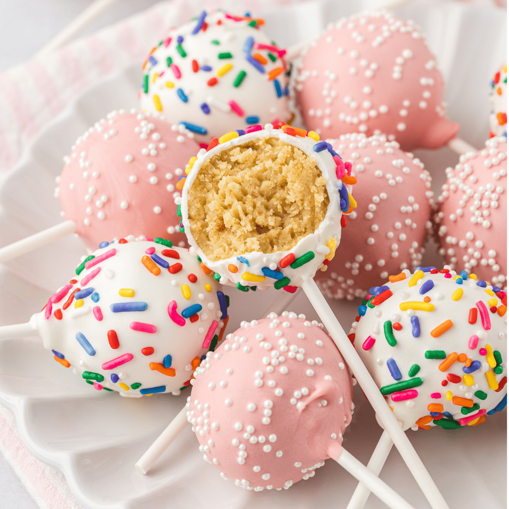

Home
cakepops!

cakepops are basically little cakes on sticks - perfect if you cant handle too much sweetness, but still want a little sugary fix!
Ingredients:
- 100g butter
- ½ tsp vanilla extract
- 2 eggs
- 100g self-raising flour
- 1 bar of melting chocolate
Steps:
- First make the cake. Heat oven to 190C/170C fan/gas 5. Grease and line the base of a 20cm sandwich tin. Place the butter, sugar and vanilla extract into a bowl and beat well to a creamy consistency. Slowly beat in the eggs, one by one, then fold in the flour and mix well. Tip into the cake tin and bake for about 20 mins until risen and golden brown. Set aside to cool completely.
- While the cakes are cooling, make the buttercream. In a large bowl or the bowl of stand mixer, beat the butter and icing sugar together until smooth, add the vanilla extract and milk and beat again. Once the cake is cooled, crumble into large crumbs. Add the butter cream and stir together. Take chunks of the cake mixture and roll into balls, transferring each ball to a lined tray or plate, push a lollypop stick into each, then put into the fridge for an hour to set.
- Melt the white chocolate in the microwave, blasting it and stirring at 10 seconds intervals until smooth. Tip the sprinkles into another bowl. Take each of the chilled cake pops and dip into the white chocolate, allowing it to drip off a little over the bowl. Dip into the sprinkles, then stand upright in a mug to dry at room temperature for an hour, or in the fridge for 30 mins.